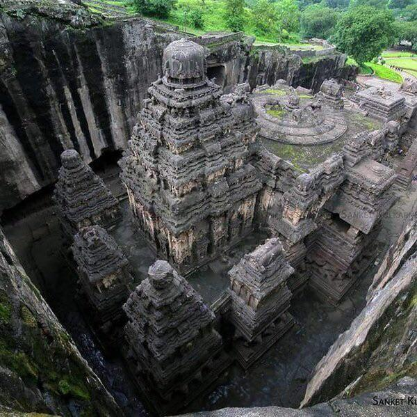

Welcome to Mythic Archives

Welcome to Mythic Archives, a digital encyclopedia dedicated to the fascinating world of ancient mythology.
Travel through time and discover the stories that shaped civilizations. Explore the mysterious and magical world of legends.
Every legend has a story waiting to be discovered!
Ancient Civilizations
Explore some of the most famous civilizations that existed thousands of years ago.
1. Egyptian Civilization

Ancient Egypt is famous for its pyramids, pharaohs, temples, and mysterious hieroglyphics.
2. Greek Civilization

Ancient Greece introduced many famous myths about gods, heroes, and legendary creatures.
3. Roman Civilization
Ancient Rome is known for its powerful empire, grand architecture, and legendary history.
4. Indian Civilization

Indian mythology contains many fascinating stories about gods, heroes, and epic battles.
Mythical Creatures
Mythical creatures are legendary beings found in stories from different cultures.
-
Dragon
A legendary creature often described as a giant reptile with wings.
-
Phoenix
A mythical bird associated with fire and rebirth.
-
Unicorn
A legendary horse-like creature with a single horn.
-
Griffin
A mythical creature with the body of a lion and the head of an eagle.
Gods and Legends
Discover some famous gods from ancient mythology.
- Zeus - Greek god of the sky and thunder.
- Poseidon - Greek god of the sea.
- Athena - Greek goddess of wisdom.
- Ra - Ancient Egyptian god associated with the sun.
- Thor - Norse god associated with thunder.
Legendary Stories
The Story of the Phoenix
The Phoenix is a legendary bird associated with fire and renewal.
According to ancient stories, the Phoenix represents rebirth and new beginnings.
It is often described as a beautiful bird with colorful feathers.
The Story of Medusa
Medusa is a famous character from Greek mythology. She is often described as having snakes instead of hair.
Her story is one of the most well-known legends from ancient Greece.
Mysteries of the Ancient World
Discover some fascinating historical places and mysterious monuments.
-
The Great Pyramids of Giza
Ancient monuments built in Egypt thousands of years ago.
-
Stonehenge
A prehistoric monument in England made of large standing stones.
-
The Lost City of Atlantis
A legendary island civilization described in ancient Greek writings.
Did You Know?
- The Great Pyramid of Giza was built thousands of years ago.
- Ancient Egyptians used hieroglyphics as a writing system.
- Greek mythology contains many stories about gods and heroes.
- The word mythology refers to a collection of traditional stories.
The ancient Egyptians worshipped many gods and goddesses.
Water is represented by the chemical formula H2O.
The sun is approximately 1.5 x 108 kilometers from Earth.
Note: Mythological stories are traditional cultural narratives and are not necessarily historical facts.
Mythology Dictionary
- Mythology
- A collection of traditional stories associated with a culture.
- Legend
- A traditional story that may contain historical elements.
- Deity
- A god or goddess worshipped in a religion.
- Hero
- A person known for courage, great achievements, or noble qualities.
Legendary Videos
Watch videos related to ancient civilizations and mythology.
Video 1 - Ancient World
Video 2 - Explore History
Ancient Sounds
Listen to peaceful sounds while exploring the world of ancient legends.
Sound 1 - Nature
Sound 2 - Dinosaur
Explore Like an Archaeologist
Follow these tips to learn more about ancient civilizations.
- Read about different ancient cultures.
- Explore historical monuments.
- Watch educational documentaries.
- Learn about ancient writing systems.
- Always respect historical sites and cultural heritage.